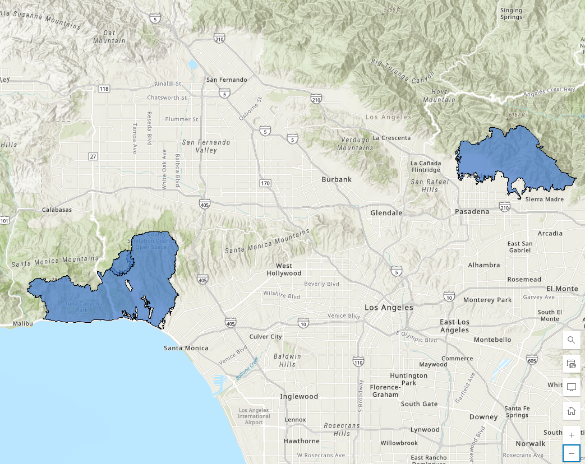
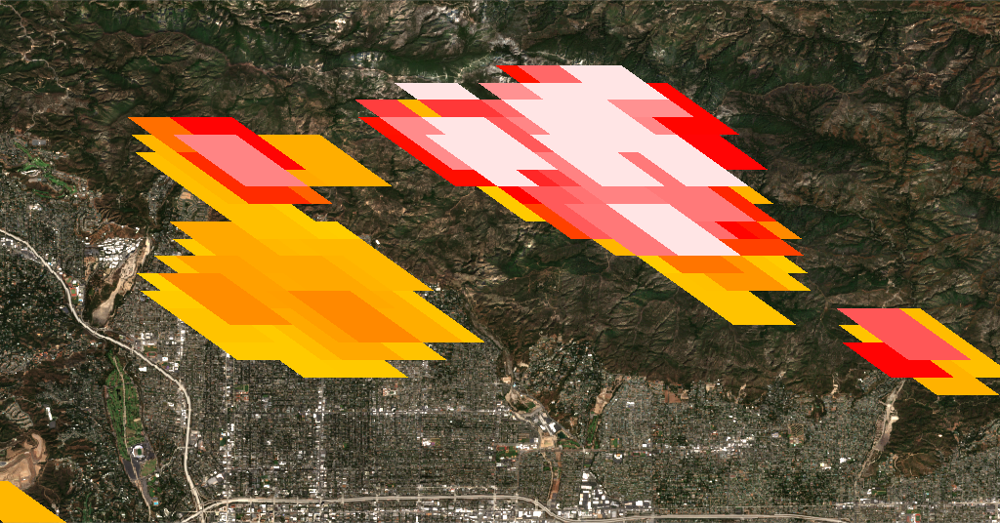
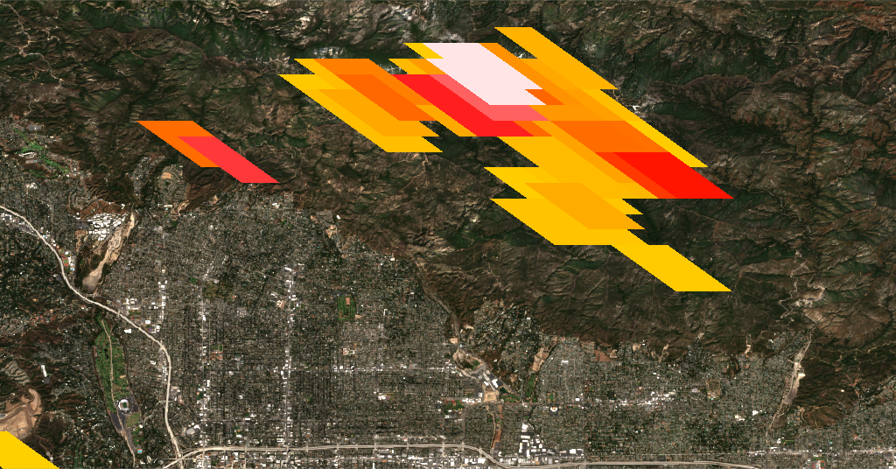
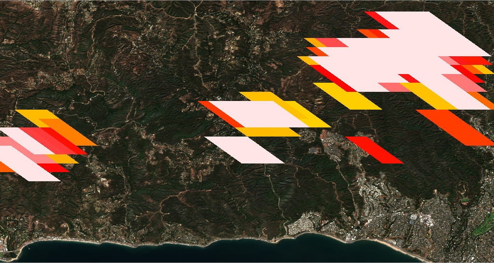
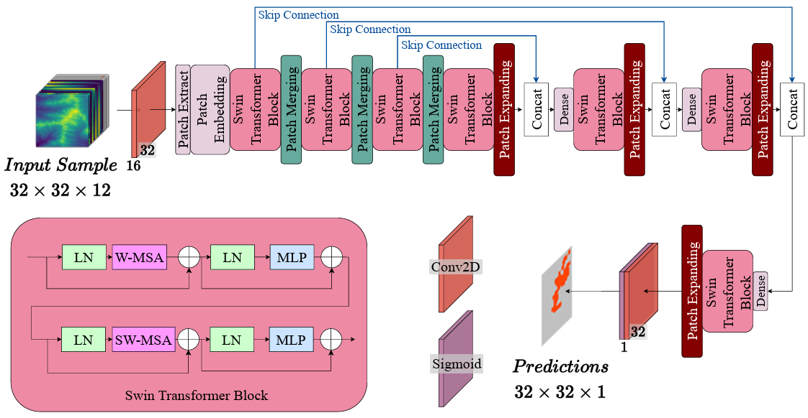
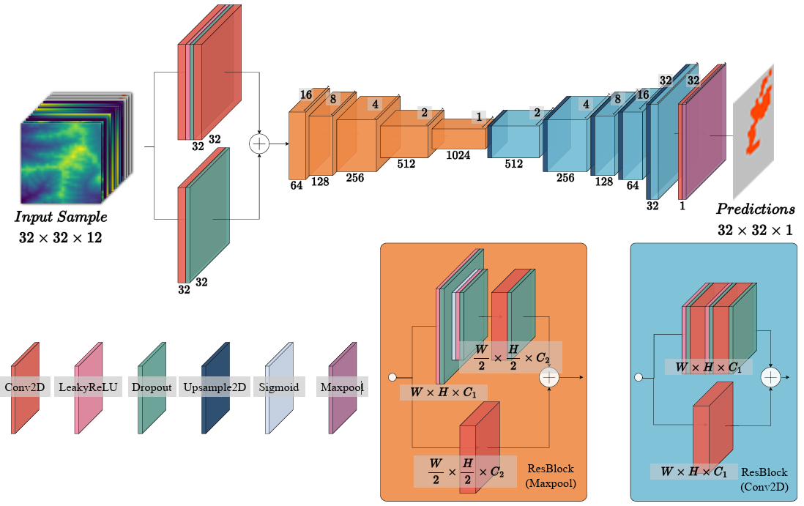
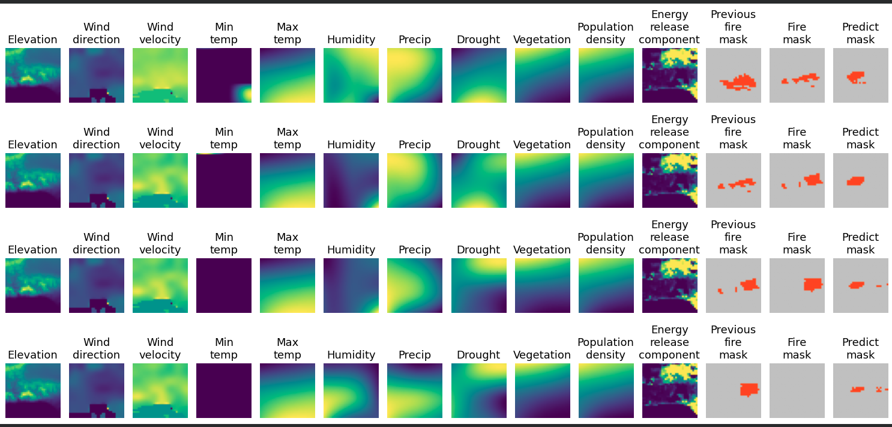
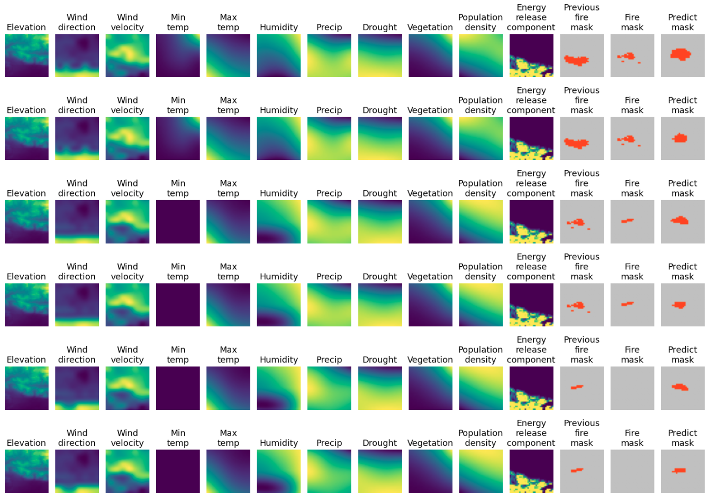
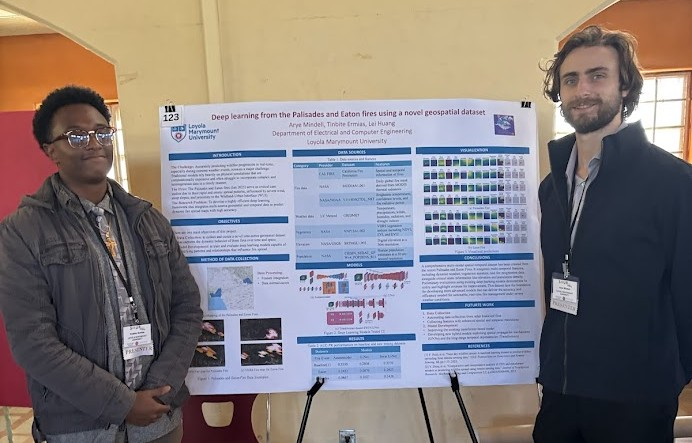

Overview
Presented at two undergraduate research conferences (SCCUR 2025 and NCUR) as a researcher at the LMU Deep Learning Lab. I trained and evaluated deep learning models that predict next-day wildfire spread from 12-channel geospatial data, built the multi-source training dataset, and applied SHAP analysis to understand which environmental features drive predictions.
Each model ingests 12 feature channels — elevation, wind direction, wind velocity, temperature, humidity, precipitation, drought index, vegetation density, population density, energy release component, and previous fire masks — and outputs a segmentation mask forecasting the next day's burn area.
Data Collection & Fire Mapping
Built the training dataset by combining ArcGIS terrain mapping, Google Earth Engine API feature extraction, and NASA VIIRS satellite fire detections. I mapped fire perimeters for multiple California wildfire events and overlaid daily spread progressions onto satellite imagery to generate labeled samples.




Model Architectures
Implemented and compared two core architectures for fire spread segmentation. I adapted Swin-UNet — a Swin Transformer encoder-decoder with shifted window attention — for efficient multi-scale spatial modeling, and benchmarked it against a convolutional UNet baseline with skip connections.


Predictions
Trained models produce next-day fire spread masks from 12-channel geospatial input. Each row below shows one day: the 12 input features (elevation, wind, temperature, humidity, vegetation, etc.), the actual fire mask, and the model's forecast.



Explainability (SHAP Analysis)
Applied SHAP (SHapley Additive exPlanations) to the trained models to identify which geospatial features most influence spread predictions. Wind conditions and prior fire mask consistently ranked as the top drivers, aligning with domain expectations. The broader project also explored GradCAM and Integrated Gradients — the full methodology is detailed in the reference paper on arXiv.
Swin Transformer Temporal Prediction (Ongoing)
Currently reproducing and extending Lahrichi et al. (2025), which adapts SwinUnet — originally a medical imaging architecture — to wildfire prediction. I am training on the WildfireSpreadTS (WFTS) benchmark: 607 wildfire events across the western US (2018–2021), totaling 13,000+ daily images across 23 channels at 375m resolution.
Key contributions I am pursuing:
- Single-day vs. multi-day input: Benchmarking single-snapshot predictions against 5-day temporal sequences to quantify the value of temporal context.
- ImageNet pre-training: Measuring the performance gain from Swin-Tiny transfer learning versus training from scratch on wildfire data.
- 12-fold cross-validation: Implementing leave-one-year-out evaluation across the full WFTS dataset for statistically robust comparisons.
- Average Precision (AP): Evaluating against convolutional and attention-based baselines (Res18-Unet, Res50-Unet, UTAE) using the primary benchmark metric.
Presentations
Presented this work at two conferences: SCCUR 2025 (Southern California Conference for Undergraduate Research) and NCUR (National Conference on Undergraduate Research). I demonstrated the explainable AI methodology and live prediction results to researchers and faculty from across the country.
